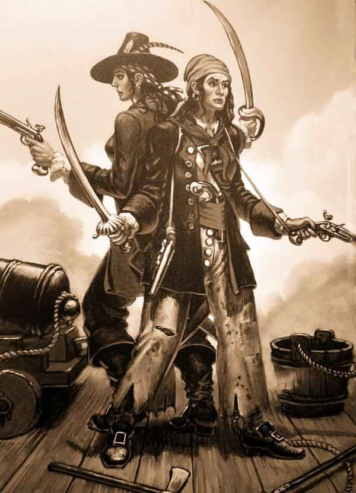

Anne Bonny

Biography
Much of what we know of Anne Bonny comes from Capt. Charles Johnson's book written in 1724 called A General History of the Robberies and Murders of the Most Notorious Pyrates. It is hard to separate all of the facts from the legends that surround Bonny's name. However, we do know that Anne Bonny must have been an incredibly strong-willed, independent woman. During the eighteenth century, men made all of the decisions, while women did not have many, or any, rights. In such a time, it would have been difficult for Bonny to be considered as an equal among the men of her crew; however, she was.
It is believed by most historians that Anne Bonny was born in Cork, Ireland around 1698. She was the illegitimate daughter of lawyer William Cormac and a maid in his household, Mary Brennan. William's wife at the time, refused to keep his affair a secret, causing him to lose his reputation within Ireland. Cormac divorced her and married Mary, heading for the New World to start a life with their newborn. They bought a plantation in Charleston, South Carolina and settled there. Mary, Anne's mother, died of typhoid fever when Anne was only 13. After her mother's death, she was in charge of taking care of her father's household. Anne's years as a teenager were never easy. It is rumored that she stabbed a servant girl, and nearly murdered a man who attempted to rape her.
When she was just sixteen, Anne met small-time pirate, James Bonny. Her father was completely against the relationship, having betrothed her to a local man. William Cormac knew that James was only after the estate, so he forbid his daughter from marrying the pirate. When she went against his wishes and did so, her father disowned her and refused to let them live with him. It is believed that after that she set fire to her father's plantation.  The Bonnys moved to New Providence, also known as the supposed "Republic of Pirates," an area within the Bahamas. It was there that Anne met and fell in love with John "Calico Jack" Rackham, a pirate captain, who even offered to pay her husband to divorce her. James refused.
The Bonnys moved to New Providence, also known as the supposed "Republic of Pirates," an area within the Bahamas. It was there that Anne met and fell in love with John "Calico Jack" Rackham, a pirate captain, who even offered to pay her husband to divorce her. James refused.
It was in August of 1720 when Bonny abandoned her husband and helped Calico Jack commandeer a sailing boat from Nassau Harbour. The two had a child in Cuba, who not many know the fate of. It is said she left the child with a relative to raise, or that he/she died during childbirth. Along with his crew, the couple (Anne and Calico Jack) began pirating merchant ships along the coast of Jamaica. To some, Rackham's decision to allow Bonny on the ship may be seen as odd due to the idea that women aboard ships bring bad luck. However, Anne Bonny was always known for her "fierce and courageous temper" and she quickly proved to the men that she could drink rum, curse, and wield a pistol and cutlass, just like the best of Calico Jack's crew. While on the ship, Bonny lived as a woman; however, when pillaging, she would disguise herself as a man to participate in the armed conflicts.
Various sources differ on when fellow female pirate Mary Read, joined the crew. Most historians say that the pair met when Rackham's crew captured the ship that she was aboard, and Read was taken as a prisoner. Mary Read was disguised as a male, and some time after Anne tried to seduce the new recruit. Mary informed Anne that was she actually a woman as well. Bonny swore to keep Read's gender a secret,and the women became incredibly close confidants. Some believe that Anne Bonny and Mary Read were lovers, while others believe they were just very close friends.

During battles, Anne and Mary fought side by side, wearing "billowing jackets and long trousers and handkerchiefs wrapped around their heads, wielding a machete and pistol in either hand." They were active on board the ship, and willing to do anything that would help. However, on the night of October 22, their ship was attacked by the governor's vessels. Most of the crew had passed out from a night of drinking, but a few, Rackham, Bonny, and Read included, managed fight back. The enemy captain, Jonathan Barnett, ordered the pirates to surrender. Anne and Mary refused to give up, even when Rackman signaled for a surrender. The two women remained on deck and faced the governor's men alone.
Eventually, they were overpowered and taken prisoner to Port Royal. Calico Jack Rackham was scheduled to be executed on November 18, and his last request was to see Anne. When she saw him, it is reported that she said: “If you had fought like a man, you need not have been hang’d like a dog.” Ten days after, she and Mary stood trial and pleaded not guilty for all charges. The two were found guilty and sentenced to be hanged, but their executions were stopped, since they were both pregnant.
There is no historical record that Bonny was released from prison; all that we know is that she was not executed. There is some speculation that her father ransomed her, or that she might have returned to her husband, James Bonny. Some believe that she may have resumed the life of a pirate with a new identity. While there is no official record of her death, a few historians claim that Bonny died in South Carolina around 1782. Other historians claim that Bonny traveled back to Charleston, SC and gave birth to Rackham's second child. She then married Joseph Burleigh in 1721 and they had 8 children together. Whether this is true or not, no one is sure.